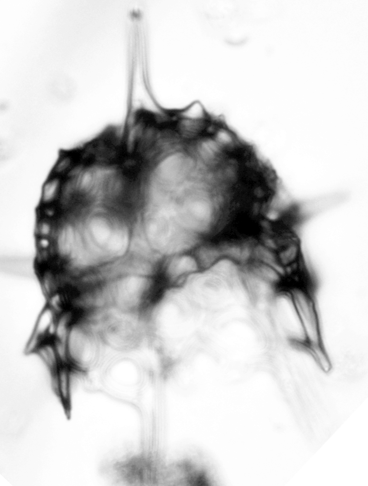
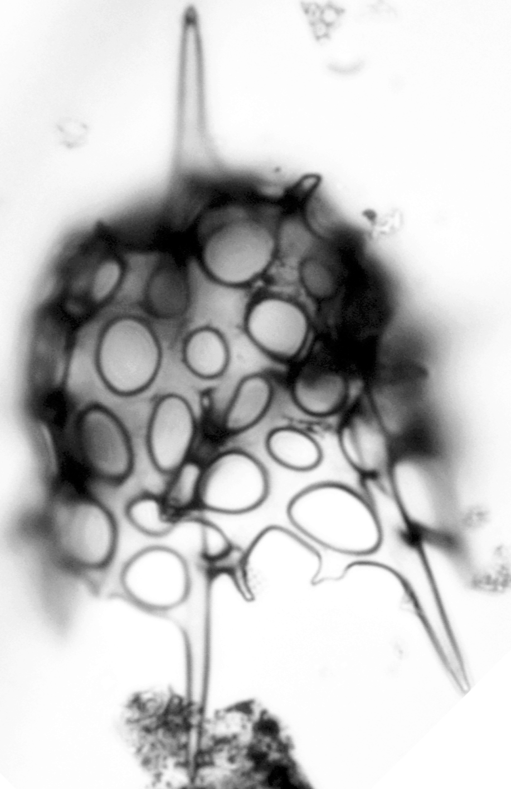

After last post's review of the last 4 years of papers I published or contributed to, I thought it might be interesting to mention the ones I am still working on (despite not being an academic anymore).
I'll only talk in details of the three I am writing as the sole or main author, as I don't know where my colleagues want to publish theirs and how much secrecy they want to keep before submitting them, but let's say I'm still contributing to a few collaborations that will or might lead to publications on themes as varied as paleo-databases, diatom morphometry, diatom and radiolarian-based silicon isotope geochemistry (yes, I did not give up on this), radiolarian taxonomy (of course), etc.
Now the ones I am main-authoring and still actively working on:
- First there is a taxonomical monograph on Mid-Paleocene to early Eocene radiolarians from Expedition 396. As I mentioned before, I was lucky enough to be invited to sample the sites retrieved during that expedition in the Norwegian-Greenland Sea as "onshore collaborator". I did already go through close to 100 samples ranging from the middle Paleocene to earliest Eocene before leaving my institute, identified everything I could on those slides and prepared a manuscript that is 90% done. I still need to write a few descriptive words about some of the forms I don't intend to describe formally but that I still illustrated (there are 12 plates so far for this MS), and polish a bit the discussions on paleoenvironmental interpretations etc. but the core is done. There will be 12 species new to science and one new genus (of lophophaenid obviously). The manuscript is currently clocking at ca. 18 000 words.


Here is one of those species as a preview.
- A year before leaving Berlin, I wrote a proposal to do some work collecting radiolarian data in the southwestern Pacific sector of the Southern Ocean using the vast collection of radiolarian slides from sites drilled by the Lamont-Doherty Earth Observatory, which we had acquired a couples of years ago, and make a series of transfer functions aiming at reconstruction past temperature at various depths in the Amundsen Sea (a work linked to Expedition 379). As I had already collected radiolarian data on a bunch of samples I think it would make sense to turn that preliminary work into a (modest) publication so that others can build on that. There is not (in my opinion) enough data to build those transfer functions yet, hence why I was asking for a grant to work on that of course, but it should definitely help, and say something on radiolarian biogeography in particular. I might even drop some taxonomical insights on the few forms I found in that corner of the Southern Ocean but not anywhere else, who knows. The data is already acquired, most of the text was already written for the proposal, so it shouldn't take a lot of time to submit this.
- And finally I did not give up on a paper I started working on while still employed, on a work I presented at a couple of conferences (one of them even put my talk online), on the climate sensibility of modern (fossilizable) plankton species. As I left that paper, I was not completely happy with the statistics I used, so there is still some work to be done, so it will take some more time.